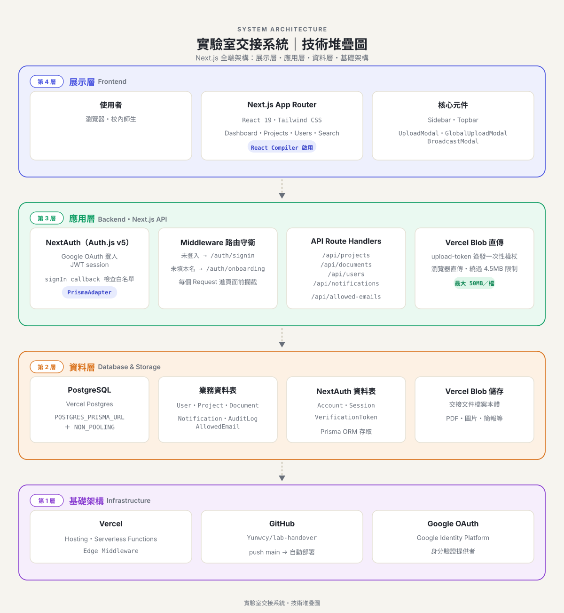
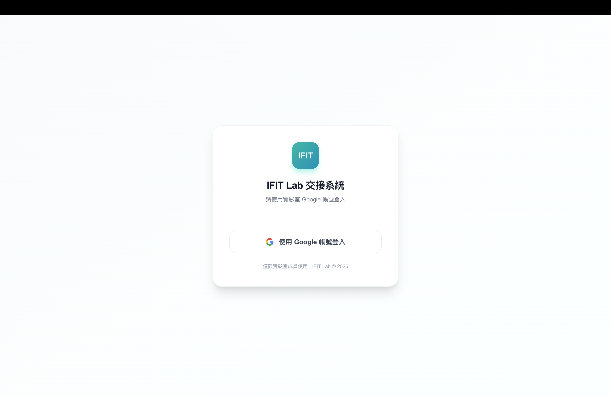
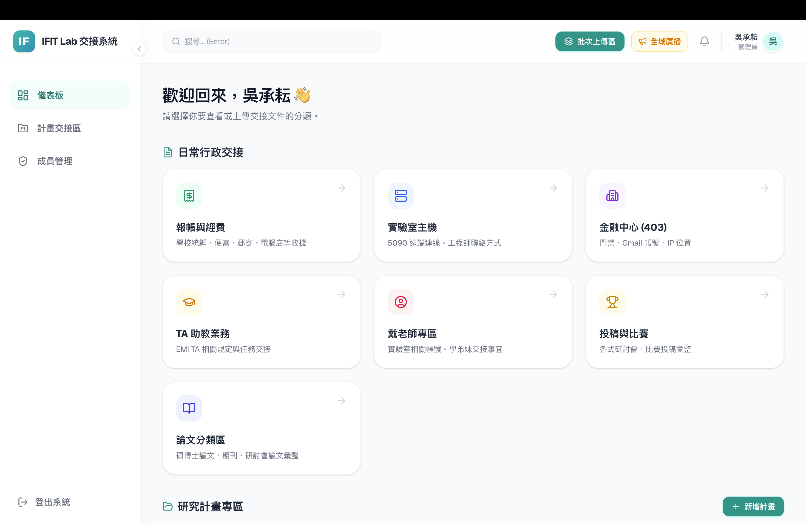
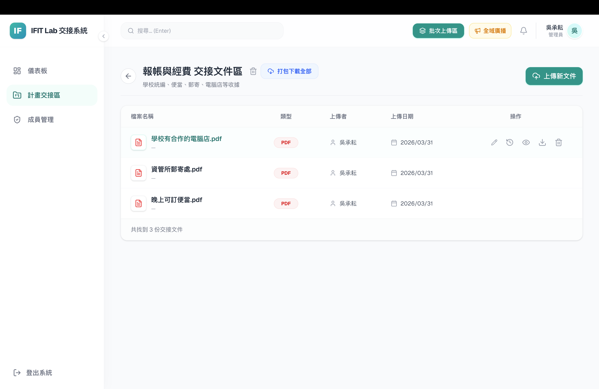
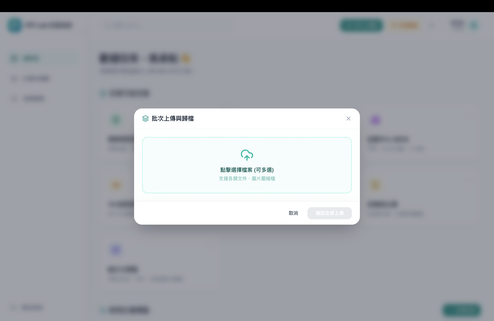
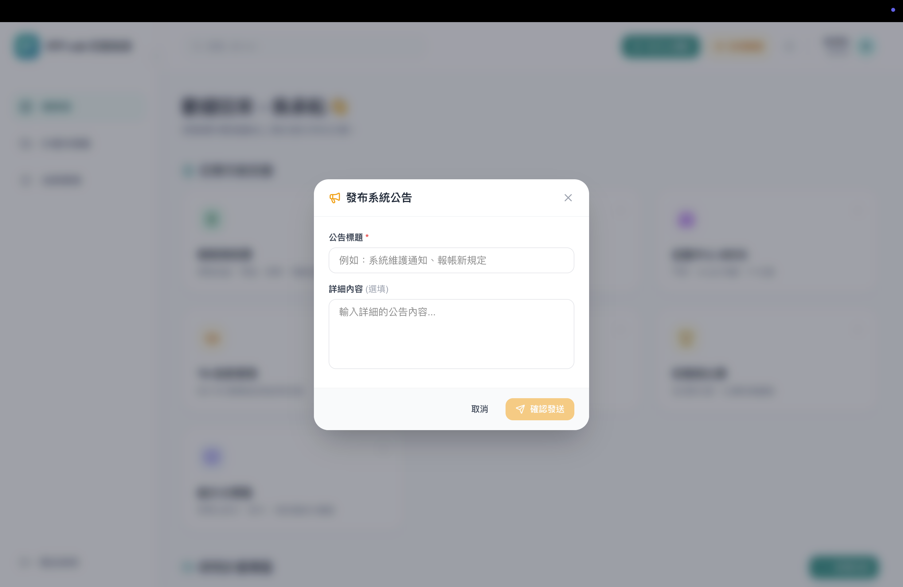
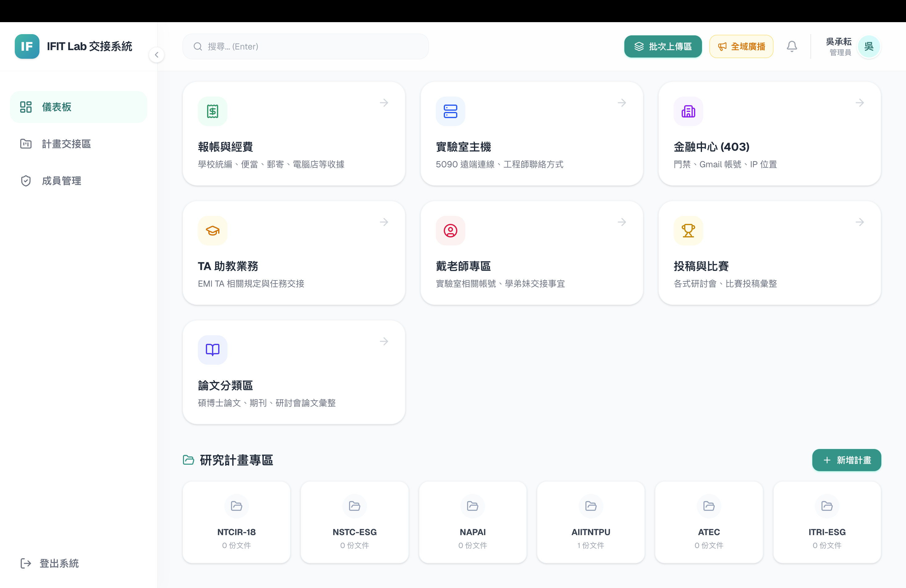
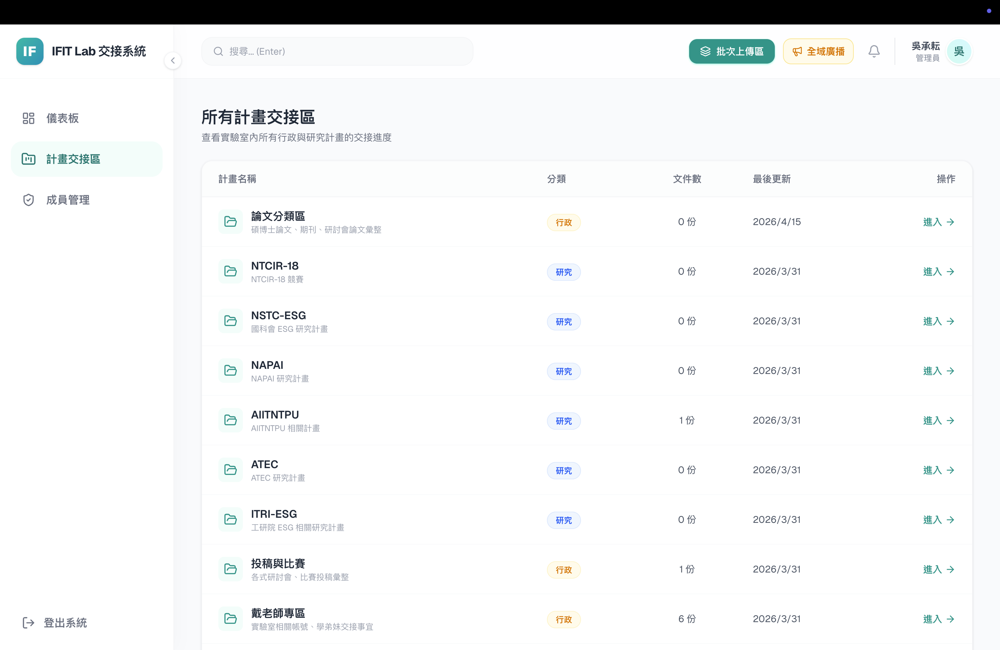
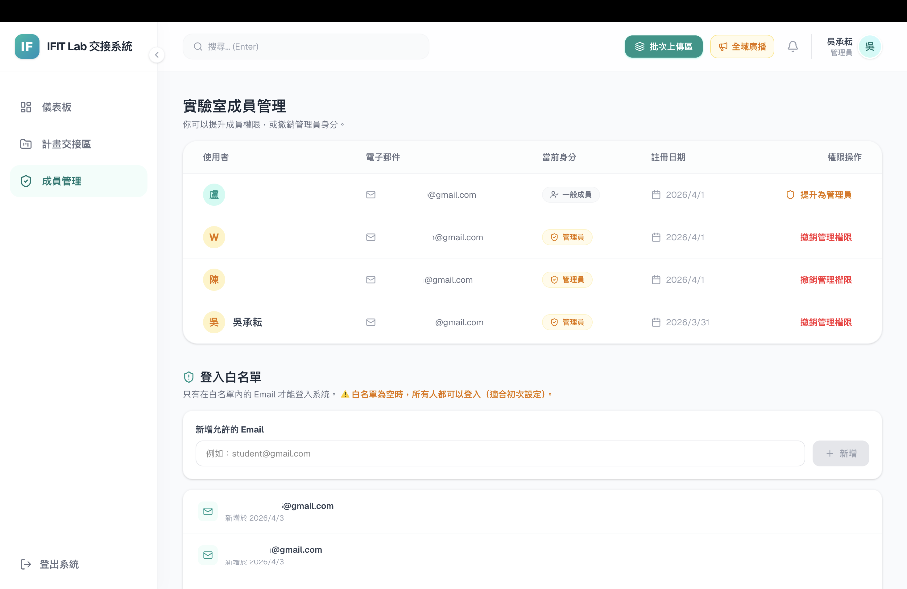

I built this system entirely on my own — architecture design, database schema, authentication, file-upload integration, frontend UI, deployment, and ongoing operations — using a Next.js (App Router) + Prisma + PostgreSQL + Vercel full-stack setup.







